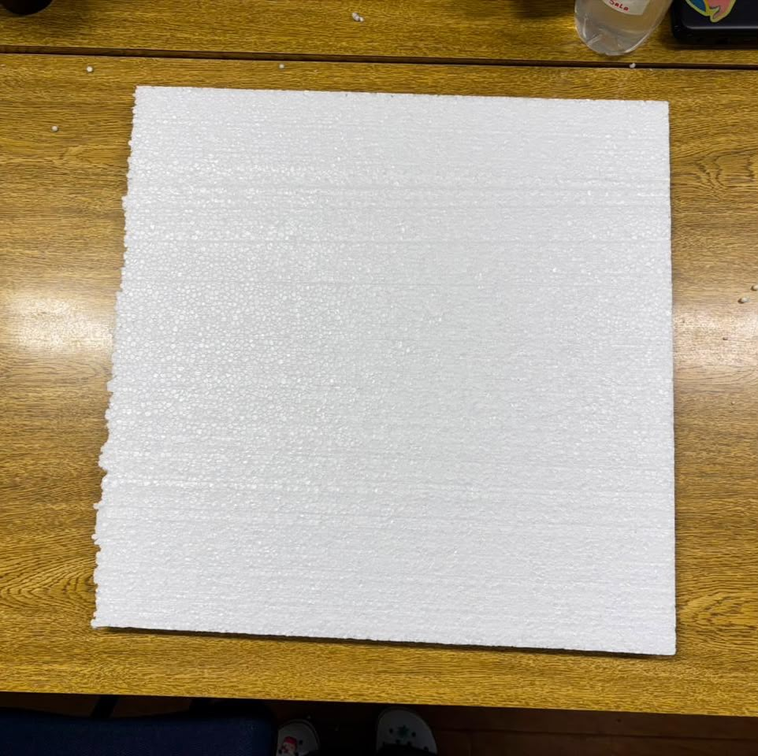
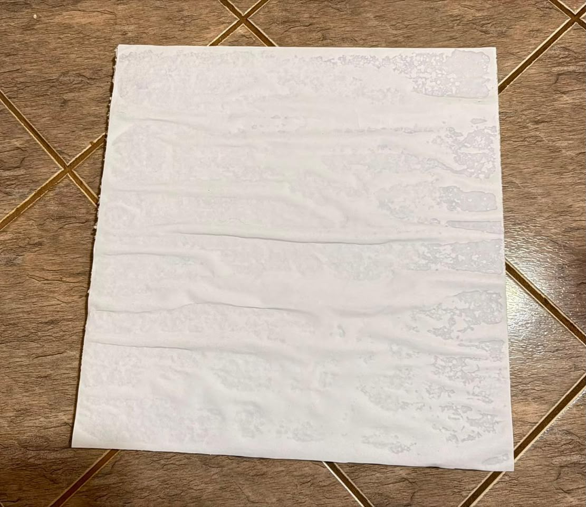
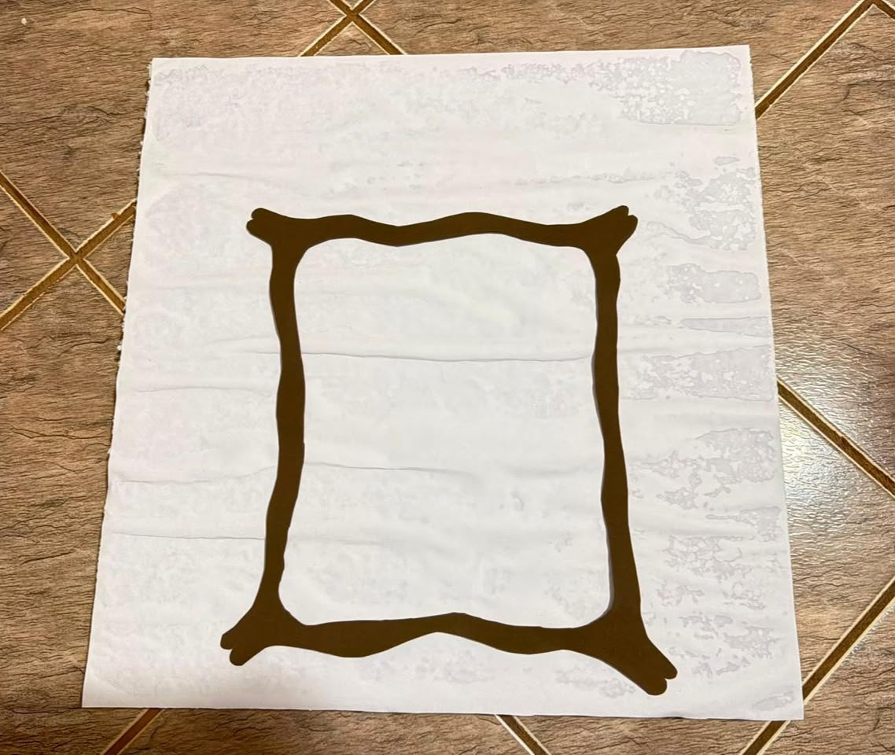
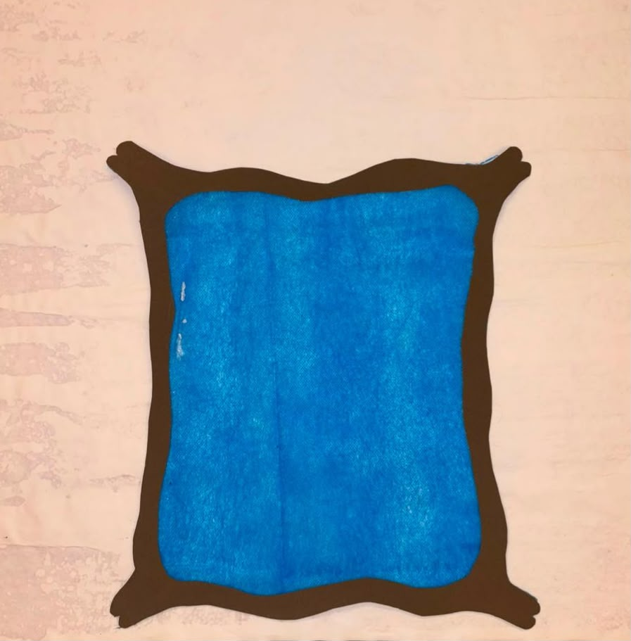
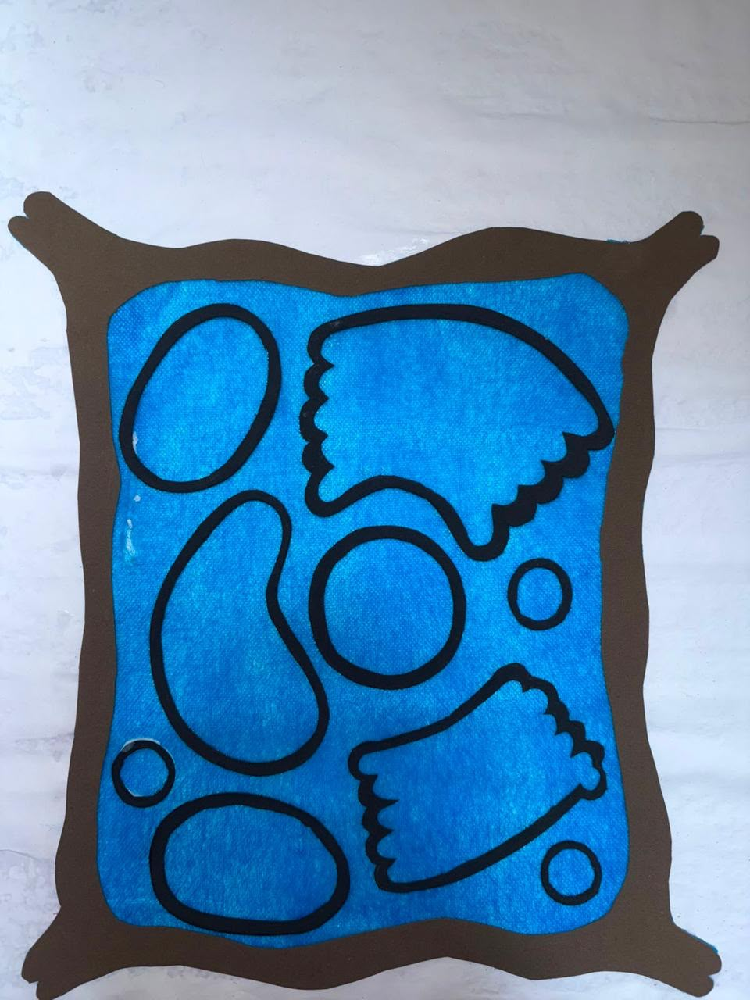
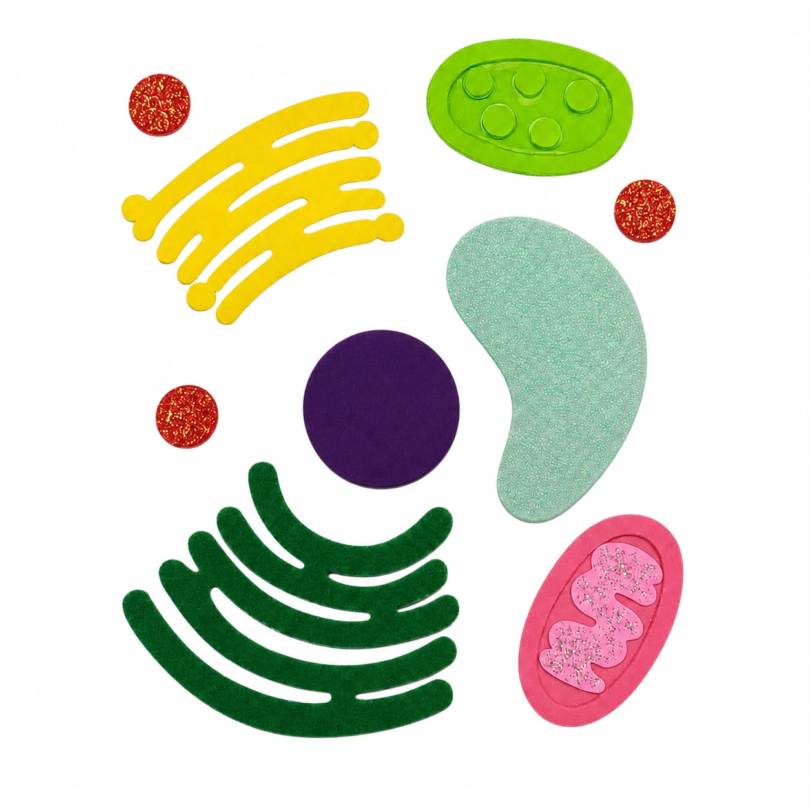
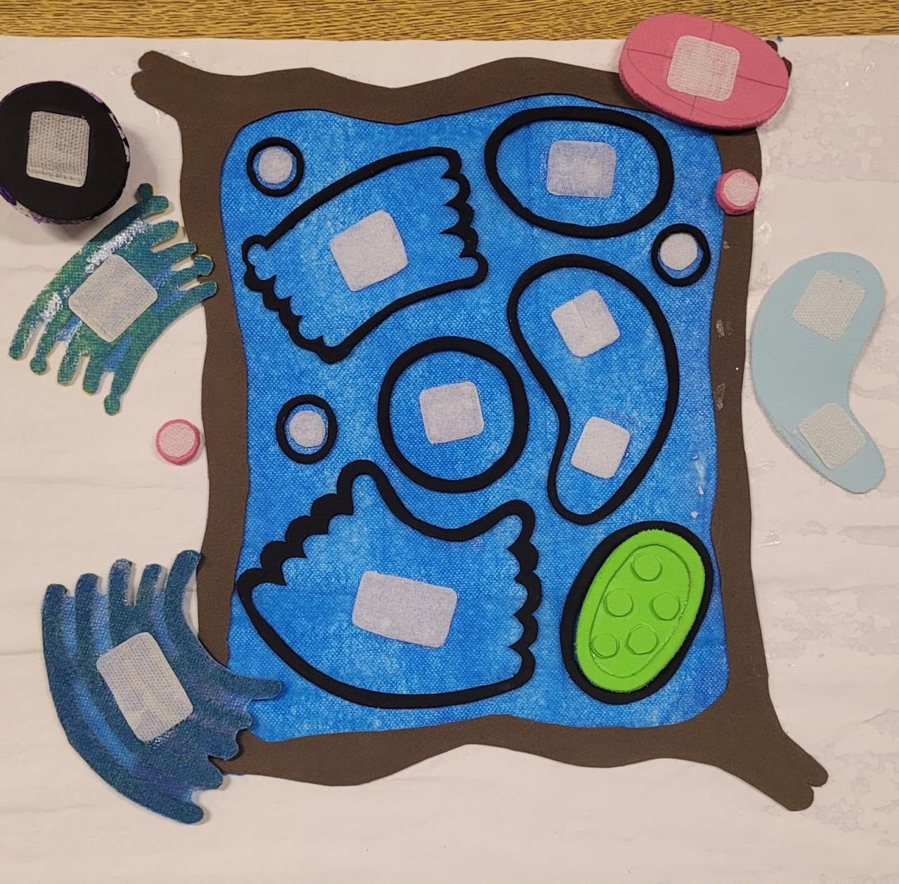
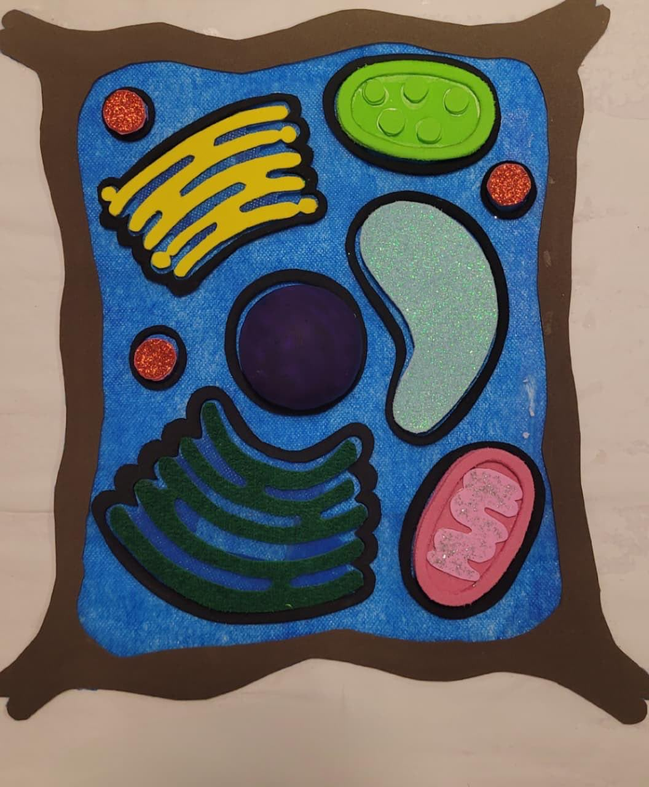
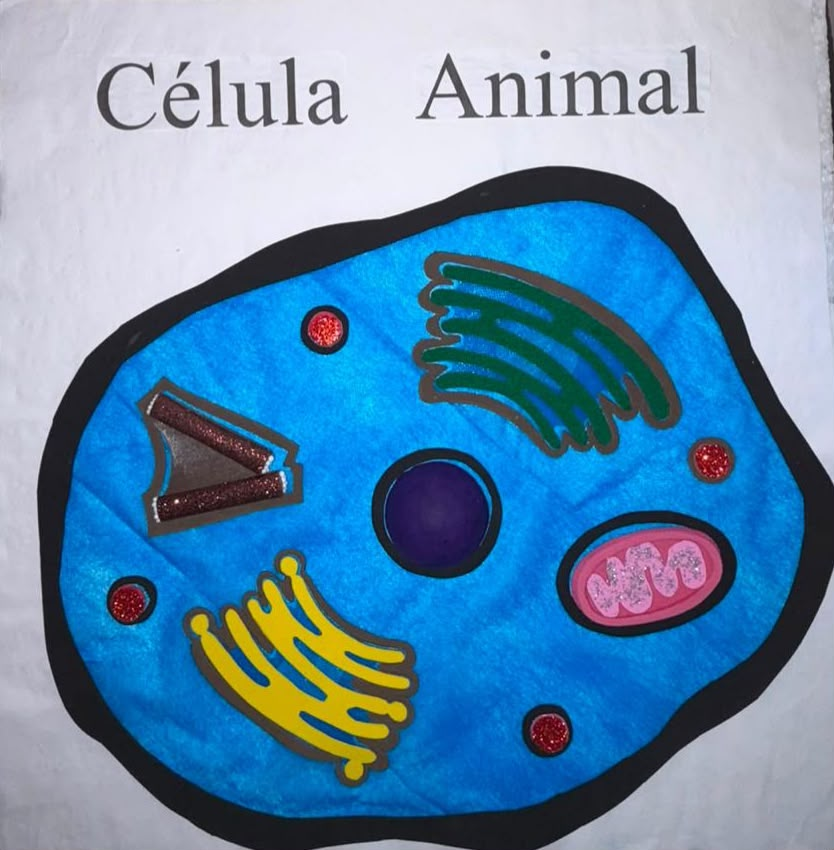

-
A base de isopor
Comece por uma placa de isopor bem lisa. Ela é leve, aguenta o peso das peças e
pode ser apoiada na mesa ou no colo do aluno. O isopor também dá firmeza para o
aluno apertar as peças sem a base dobrar.

-
Forre a base com TNT branco
Cubra todo o isopor com TNT branco e cole nas bordas, virando o tecido para trás.
Além de deixar o acabamento bonito, o tecido evita que o isopor solte aquelas
bolinhas e dá um toque mais agradável ao dedo.

-
A parede celular
Recorte no EVA marrom uma moldura com cantos ondulados e cole no centro da base.
Essa é a parede celular, que só existe na célula vegetal. Por ser
mais grossa e mais alta que o resto, o aluno acha a borda da célula só de passar a
mão.

-
O citoplasma
Recorte o TNT azul no formato do vão interno e cole dentro da moldura marrom. É o
citoplasma, onde as organelas ficam mergulhadas. O contraste entre
o azul liso e o marrom em relevo já separa o "dentro" do "fora" da célula.

-
Os contornos das organelas
Recorte em EVA preto o contorno de cada organela e cole sobre o citoplasma, no lugar
onde ela vai ficar.

-
As organelas em EVA
Recorte cada organela numa cor bem diferente e, sempre que der, numa
textura diferente: EVA liso, aveludado e com glitter. A textura é
uma segunda pista, além da cor e do formato. Capriche no tamanho: peças muito pequenas
são difíceis de pegar.

-
Velcro atrás de cada peça
Cole um quadradinho de velcro atrás de cada organela e o par correspondente dentro
do contorno preto. Assim as peças saem e voltam, e a célula deixa
de ser um cartaz para virar uma atividade: o professor entrega as organelas soltas
e o aluno monta a célula sozinho.

-
QR Codes nos cartões
Gere os QR Codes na página
Gerar QR Codes, imprima, recorte e cole
o QR de cada organela no verso do cartão correspondente. Ao escanear, o aluno cai
direto na página daquela organela e ouve a explicação.
-
Célula vegetal pronta
Encaixe cada organela no contorno correspondente e identifique a base com o nome do
tipo de célula. Pronto — seu protótipo de célula vegetal está completo.

-
Célula animal pronta
A célula animal usa a mesma ideia, mas com o contorno preto e arredondado da
membrana plasmática no lugar da parede, sem cloroplasto e sem o
vacúolo grande — e ganha os centríolos. Colocar as duas lado a
lado é a melhor forma de o aluno sentir a diferença entre elas.
